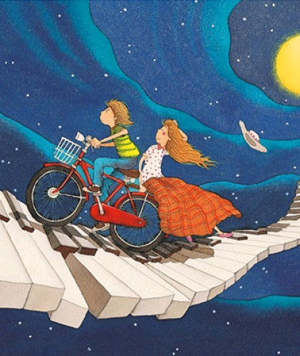

在梦之遗迹，雨飘零，缘相识，（贰）
#1 在梦之遗迹，雨飘零，缘相识，（贰） 作者：蓝天蓝 发表时间：2011-7-13 15:06:05
在梦之遗迹，雨飘零，缘相识，（贰）
作者：微笑的娜娜

清爽的九月，处处都是一派繁忙兴奋的景象，家长们忙着孩子的入校准备，孩子们忙着寻找好久不见的校友，见面的彼此询问着暑假的见闻，到处都是人声，热闹，喧哗。。。
七岁的芸娜小小的手被妈妈牵着，走在小学的林荫道上，好奇的人儿四处张望着，大大的眼睛闪着亮亮的光芒，今天可是她转入这所小学校门第一天啊!
"咦，妈妈怎么不走了"疑惑地看向前方，一位正和妈妈拥抱的阿姨牵着一个戴着花边帽子的小女娃，不像自己一样穿着自己最爱的裙子，而是身着小衬衣，牛仔裤，大大的眼睛，不知怎么形容对方美丽的外貌，直觉对方就是很漂亮的，她说道：“哇，好漂亮的姐姐”脑海中这样认知的小人儿不曾发现对方看她的眼神锐利了许多。
上官轩轩瞪着说他漂亮的女孩，讨厌她这样看着自己，还叫自己姐姐，更无法忍受自己头上的帽子，却不敢取下，只好更深深地瞪对面的人，她那是什么衣服，粉粉地裙子，真难看，皮肤还没自己的白呢，眼睛是挺大，可是自己就是不喜欢。
说的很热切的两个大人显然是很熟悉的人，芸娜家搬了新家后，因为离从前上学的小学远的关系，她只好转校，没想到刚来报到，妈妈就遇到从前的好友，聊过之后才知道原来她们现在成了邻居，本来就极好的两人甚至认了对方的孩子为干女儿儿子。于是七岁的芸娜认识了同样七岁的上官轩轩，从此俩人开始了人生的交集。
“告诉你，别叫我姐姐，我是男孩”上官轩轩怒吼道，最后一点忍耐消失殆尽。
笑笑的芸娜开心地看着他发狂的样子，不怕死地道：“我知道呀，在老师让男生女生分开站队的时候我就知道了，怪不得你比我高呢."看着他有些放心下来的样子，她加了一句：“可是娜娜还是喜欢叫轩轩姐姐，姐姐。”
在自家客厅做作业的他霍地站起来回到自己的房间，气愤地关上房门，最讨厌妈妈，总是把自己当女孩养，他是男子汉才不要当女孩。更讨厌芸娜，自从认识她后妈妈好像喜欢她超过自己，而且她最爱惹自己生气。爸爸妈妈还总让自己照顾她，不许自己欺负她，以后不理她了。
小小男孩的想法显然不可能实现，因为他们此后一直都是同学，虽然上初中的时候，上官轩轩在选择学校的时候小小抗议了一下，但是在四个大人和一个同自己一样大的女孩的反对下，抗议无效。
芸娜和上官轩就这样考入同一个高中，在开学典礼上看着主席台上讲话的上官轩轩，芸娜才发现他其实很有男子气概，也很帅气，这样的他让芸娜的心不再平静。放学的时候，照样是他载着她回家，坐在自行车后座上，搂着他的腰肢，靠在他的背上，芸娜觉得这样好安心，好温暖。
这样清爽的味道，像遇到他那天空气的味道，这样的好闻，让她的心甜甜地。
这样温暖的拥抱，即使只是拥抱着
#2 Re:在梦之遗迹，雨飘零，缘相识，（贰） 作者：被感动的人 发表时间：2011-7-13 15:41:52
真厉害，能找到这么多美文~#3 Re:在梦之遗迹，雨飘零，缘相识，（贰） 作者：非黑既白 发表时间：2011-7-13 23:03:38
有女人的地方就有美的存在，就有哀伤、就有故事......#4 Re:在梦之遗迹，雨飘零，缘相识，（贰） 作者：黄启超 发表时间：2011-7-14 18:44:23
千年的朔风
黑白的执着
不变的乾坤
方阵……
布
纵横十五道直线
置
二百二十五个眼点
五子棋
线线灵性寻找
点点凝重期待
下点
竹送清溪月
走线
松摇古谷风
落子
面向天地浩荡
起子
拥抱岁月苍桑……
线线相交
落子有声
子子相联
岁月无居
黑白相间、相堵、相围、相连……
恋恋的徘徊
梦就的思路
纵横的是非
分明的黑白
放飞云和月
回眸山与水
宁静在心
打下的烙印
染红了暮色秋风
再长久的一生
也不就只是
就只是
回首
那短短的一瞬间……
强四活三
惊过迟缓
双三成线
张望震颤
落子无悔
思念有限
三指拈捏的黑白情怀
理念今年的计划
举棋不定
告知来春的呵欠
点点春雨
带来了许多的记忆
片片雪花
讲述了更多的故事
东去的幻梦
西来的重逢
钎手一挽
拂起晚风的衣角
落手一按
激起千年的沉思……
线就是路
点就是人
线串起草芥的黑白人群
把岁月捆住
日日反复的扭曲中
开盘
收盘
复盘……
起起落落
曲曲折折
走走停停
这都是在
人生罗盘上起落的星花……